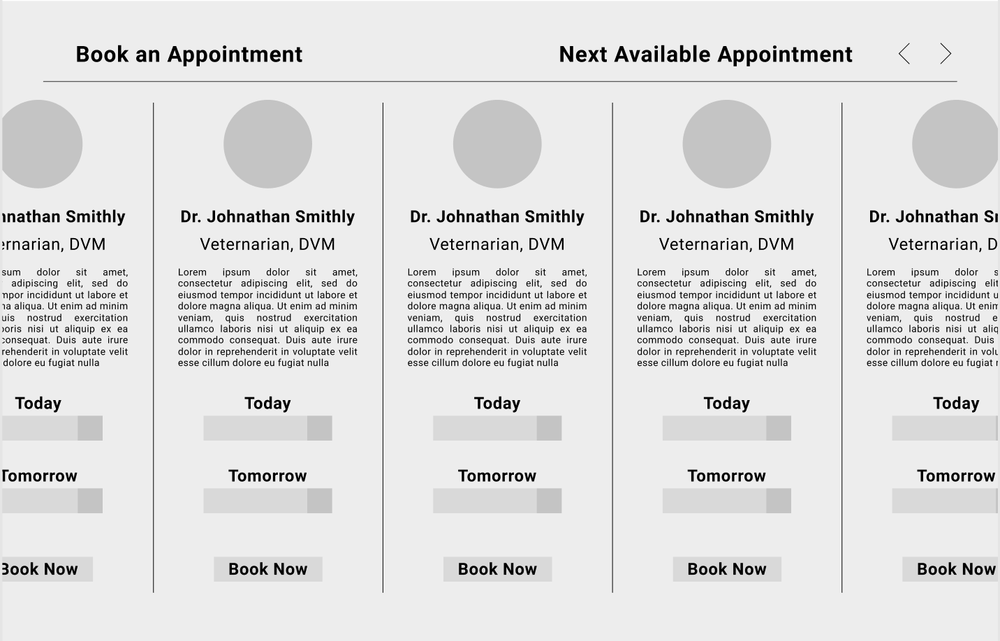
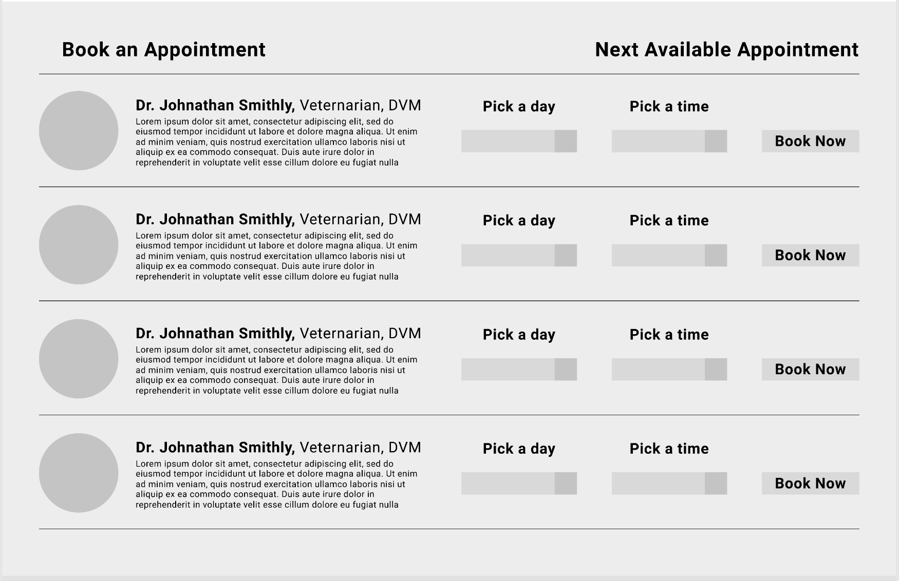
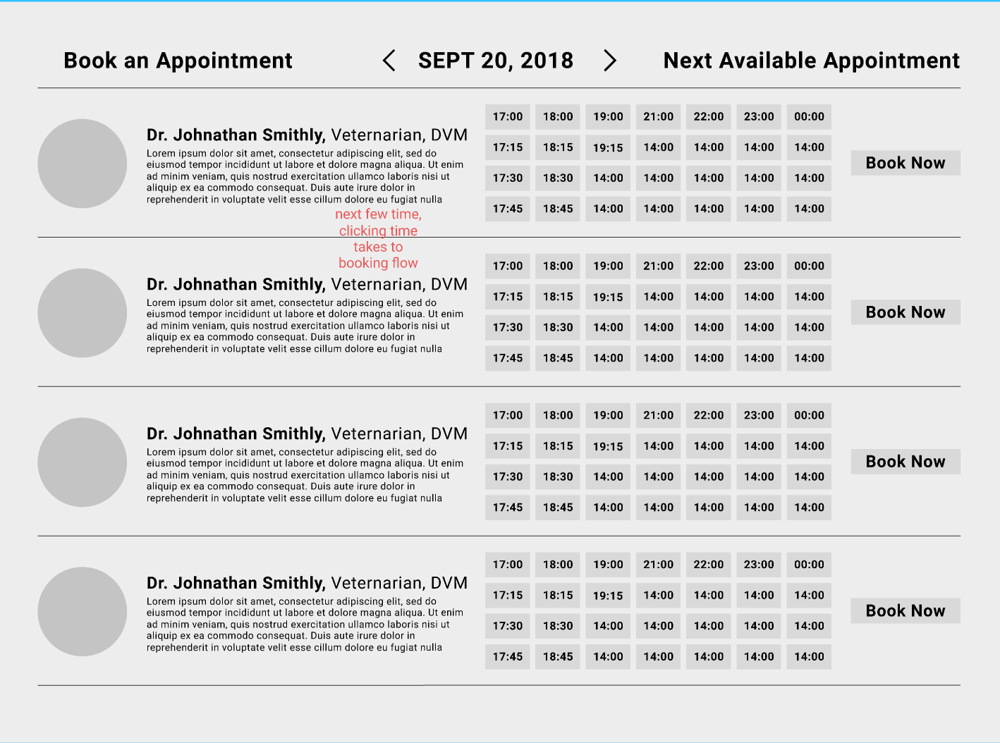

Healthy Pets connects local veterinarians and pet owners via online video or messenger chat so pet owners can get expert advice from the comfort of their home. Pet owners have the ability to book an appointment with a vet of their choice at any available time. Pet owners can ask any questions and raise concerns to their vet. The veterinarian can give advice and triage online to help the pet owner in any situation. Many pet owners use Healthy Pets if their dog or cat has experienced a behavioural change, skin change, or bodily concern has occurred.
A main feature added to Healthy Pets was the ability for guest to use the platform. Originally, users had to create a people and pet profile to book an appointment. The guest flow and the white label experience was very similar.
As a product manager, I used analytics and feedback to strategize the different features that could be added to the Healthy Pets website. The website visuals and copy changed a lot in four months. The content strategy that I’ve thought about is to showcase the vets and how local and caring they are. I created a mockup that changes copy to quickly showcase the benefit of appointments on Healthy Pets. Many people don’t know the reasons for using Healthy Pets. This design showcases the multiple reasons to speak with a vet online, even if it’s not your local vet. Another user that can be targeted are those who take their pets to regular check-ups, or post-operation check-ins. The copy should not solve the problem, it should entice users to emotionally relate their situation and see the benefits of Healthy Pets.
The guest login flow was created to reduce the barrier of users booking appointments. Previously there were 10+ steps from browsing to booking an appointment. The main users booking appointments through Healthy Pets was 40+ years in age. From this data, 10+ steps to browse and book appointments had a high drop off rate. By looking at Smartlook, a software that heat maps and records users on the website, we were able to see that users didn’t understand how Healthy Pets works.
This option was to redirect users to initially create a profile with an additional option of ‘continue as guest.’ This idea didn’t help with reducing the barrier since the amount of steps would only be reduced by 2. Users would be redirected twice to create tokens that allowed them to view the vets available.
This option was ask users to checkout at the end. This is a pattern that many users experience when online shopping. Fleshing out this options showed that we could reduce the steps to book by 50% . From the Smartlook analytics, we discovered that users don’t know the vets in most cases. This option showcased the vets and times so that all users could browse, account or not.
Option 2 is what is currently on the Healthy Pets website. After a group discussion I was able to mock up some ideas for showcasing the vets. The final design showcases the veterinarian bio and the times they are available to show that users can book ‘right now.’
  Having guest login increased the amount of appointments per week by 5%. Since adding the feature, 80% of the appointments that were booked, were booking as guests. When users received their guest outcome via email, many created accounts to view their details. This was great for Healthy Pets to expand their user and clinic locations.
| Project: | Design | Mock ups |
| Date: | Fall 2018 |
| Tools: | Figma, Invision, Procreate |